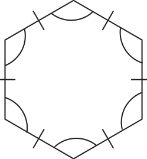
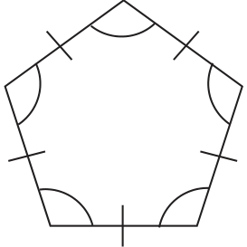
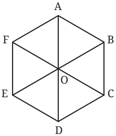
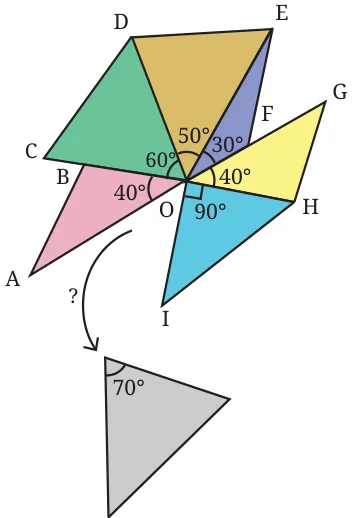
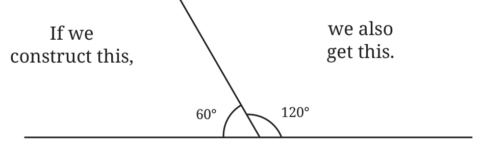
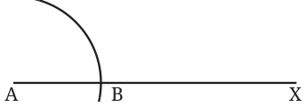
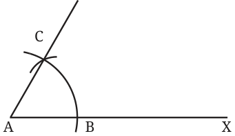
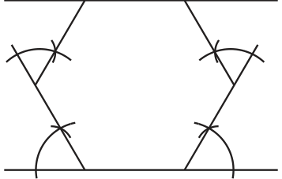

Figure it Out
- Use support lines in Fig. 6.11 to construct a pointed arch. Make different arches, by changing the radius of the arcs.
- Make your own arch designs.
Regular Hexagons
Recall that a regular polygon has equal sides and equal angles. A regular polygon with 3 sides is an equilateral triangle, and a regular polygon with 4 sides is a square. We have constructed these figures earlier.
How do we construct a regular pentagon (5-sided figure) and a regular hexagon (6-sided figure)? To begin with, try to construct a pentagon and hexagon with equal sidelengths.


To construct a regular pentagon, we first need to have a better understanding of triangles and pentagons. We will discuss this in later years. However, constructing a regular hexagon is within our reach!
Can we break a regular hexagon into smaller pieces that can be constructed?

Regular Hexagon and Equilateral Triangles
What happens when we join the ‘opposite’ points of a regular hexagon? Since a regular hexagon has equal sides and angles, can we expect a figure like this?
Will all the triangles in the figure be equilateral triangles?
To answer these questions, we will reverse our approach.
Can six congruent equilateral triangles be placed together as in Fig. 6.12? If yes, will it result in a regular hexagon?
If six congruent equilateral triangles can indeed be placed as shown in Fig. 6.12, then the sides of the resulting hexagon are equal, and their angles are \(60 + 60 = 120^{\circ}\) (how?). So what we really need to examine is whether 6 congruent equilateral triangles can fit this way without overlapping and without leaving any gaps around the centre.
We have defined a degree by taking the complete angle around a point to be \(360^{\circ}\). So all the angles around the centre should add up to \(360^{\circ}\).
Consider this figure. Will the \(70^{\circ}\) angle fit into the gap? What is the gap angle \(\angle AOI\)?
We have,
\(40^{\circ} + 60^{\circ} + 50^{\circ} + 30^{\circ} + 40^{\circ} + 90^{\circ} + \text{gap angle} = 360^{\circ}\).
Use this to determine whether the \(70^{\circ}\) angle fits the gap.
Thus, if there are angles that add up to \(360^{\circ}\), their vertices can be joined together at a single point such that

- the angles do not overlap, and
- they completely cover the region around the point.
Since each angle in an equilateral triangle is \(60^{\circ}\), six such angles add up to \(360^{\circ}\). Therefore, six congruent triangles can be arranged as shown in Fig. 6.12.
In Fig. 6.12 can you explain why AOD, BOE and COF are straight lines?
Construct a regular hexagon with a sidelength 4 cm using a ruler and a compass.
We can construct a regular hexagon more directly if we can construct a \(120^{\circ}\) angle using a ruler and a compass.
How do we do it?
This can be done if we can construct a \(60^{\circ}\) angle.

Construction of a \(60^{\circ}\) angle
How do we construct a \(60^{\circ}\) angle?
We get a \(60^{\circ}\) angle if we construct an equilateral triangle! We can use the following steps for this.
Suppose we need a \(60^{\circ}\) angle at point A on a line segment AX.
Step 1

Construct an arc with centre A and any radius.
Step 2

With the same radius, cut another arc from B that meets the first arc. Let C be the point at which the arcs meet.
We have \(\angle CAX = 60^{\circ}\).
Why is \(\angle CAX = 60^{\circ}\)? Is there an equilateral triangle here?
We can use these ideas to construct a regular hexagon —

Construct a regular hexagon of sidelength 5 cm.